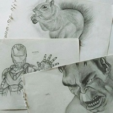
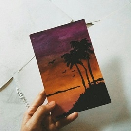
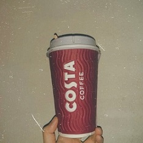

I start to draw when I was 7 years old. At first, my drawing does not look realistic but, I try to learn,learn and learn to make the drawing look real and beautiful.
I learn by watching drawing tutorial on YouTube. Besides, I am art stream student and get the knowledge from my teacher. She teach me how to make color tone,
the right way to draw step by step and etc. I feel happy because she willing to teach me until I can improved my skill in drawing.
Usually, I will draw during my leisure time and every drawing will took 1 or 2 days depend on what kind of things or
person that I draw. Because I am one of avengers fans, I keep drawing them. However, still I don't have time to draw Captain America huhu. He is too handsome until it hard for me to draw him haha.
Furthermore, I love to draw because it help to reduces my stress and make me feel calm. Now, I don't have time for it because I am focusing on my assignment.
The picture in this video are my old drawing and yup I am still learning. I am the only person in my only who have interest in art and design. While, my family like
to solve mathemathics problem and cooking or etc zzzz.I am different with other family members lol. Nah, nevermind. I am grateful because my parents is supportive and postive in everything I do.
I will never stop drawing and will continue to do that after finish my diploma!😊

If drawing can make me feel calm then painting can reduces my anxiety. I also love to paint but there is stil many things that I need to learn. The picture below is one of my best picture (for me hehe)
Compared to drawing, painting is more difficult because you can't erase any colour after you paint. It's more challenging and fun! because you can mix up all the colour like a magic.
I still remember that I need to colour sport shoes that I draw. Sadly, the paint is still been keep in my highschool. Besides, I also have win painting competition for Merdeka Day.
Yup, I don't remember where I put the banner hahaha. My teacher always said to me in painting you need to be brave on using and combine colours. Feel confident and think outside of the box.
Then, first thing you need to do is choosing the right colour and imagine first. The colour tone, how to mix the colour and etc. Ask yourself, what kind of picture do you want to paint! because it have a lot of process.
A reminder, do not feel pressured if the colour is messy because it hows the painting work been done. Colourful with Messy equal to good painting.
I really miss to finish the oil pastel colours & papers😣

Due to my health problem, I don't allowed to drink coffee. But, I cant avoid it. (addicted) Coffee have one taste which make you want to drink it more and more!
Right now, I am trying to stop drink coffee and start to buy a dozens of mineral water. We all know that drinking coffee will not make us asleep however, different with my situation
I will feellllll sleeppy and sometimes have a migrain. A warning for me to stop drinking a lot of coffee buttttt I can't (crying).
However, I don't like to drink Americano. Not because of the taste but the colour haha! It's too dark and I will faint after drink it. My body starts to feel weak and I don't have
appetite. Doctor said my blood pressure is low the reason why I need to avoid that and start to drink more juicy, and healthy food. Like kale, guava and etc.
I have taste many types of coffee and latte is the best one either hot or cold. I have drink latte from Starbucks, Zeus, Tealive, McDonald's and Costa Rica. All the coffee taste the same but
the price is differentzzz espcially, Starbucks hahaha. For me, no one can beat Costa Rica coffee latte. You should give a try if you're a coffee lover. If not then yes keep drinks a lot of plain water.
Don't be like me. Sturborn daughter.
P/S: The coffee made is good and the price is affordable.🖤